1. What is thirteen million, eleven thousand one hundred and one in symbols?
2. How many groups of a hundred are there in the total value of digit 5 for the number 450319.2?
3. What is the value of
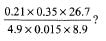
4. The figure drawn below is a rectangle.
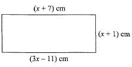
5. What is 340068 divided by 17?
6. What is the difference between LCM of 12 and 24 and the GCD of 54 and 36?
7. What is the value of ¼ ÷ ½ of ½ + (⅔ - ⅙)?
8. What is the next number in the pattern 3, 10, 5, 12, 7, 14, 9, 16,...?
9. The area of the trapezium JKLM drawn below is 544 cm2. Line JK is parallel to line LM and line JM is the perpendicular distance.
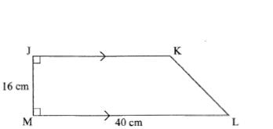
10. Six men can complete a job in 20 days. If the men work at the same rate, how many more are needed to complete the job in 12 days?
11. The mean of ten numbers is 5.8. Nme of the numbers are 5, 9, 3, 7, 6, 4, 6, 5 and 7. What is the product of the mode and median of the numbers?
12. A businessman borrowed sh 40 000 from a lending institution at a simple interest rate of 21⁄2% per month. How much did he pay back at the end of one year?
13. What is the value of
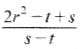
14. A vendor sold 2⁄5 and 1⁄4 to students. He also sold 3⁄7 of the remaining fruits to others. If the vendor was left with 168 fruits, how many fruits were sold to students?
15. The diagram below shows a plot of land drawn to scale 1:100 000.
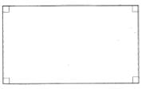
16. Juma paid sh 11 900 for a bicycle after getting a discount of 15%. How much more would he have paid had he been given a discount of 10%?
17. A 26-seater bus and a 14-seater matatu were to transport 494 pupils to a sports meeting. If the matatu made an extra trip than the bus, how many pupils did the matatu transport?
18. Using a pair of compasses and a ruler construct a triangle UVW such that lines VW — 7 cm, UV = 8cm and UW — 6 cm. Draw a circle which passes through U, V and W.
What is the length of the radius of the circle?
19. The figure PQRS drawn below is a parallelogram. Angle PSR = 70°, angle PQT = 30° and line TQ — line TR.
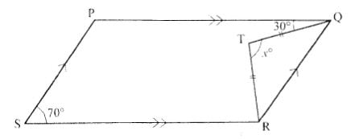
20. A children's home was supplied with 40 cartons of milk. Each carton contained 60 two-hundred millilitre packets of milk. How many litres of milk were supplied?
21. The following stack of cubes was dipped in paint
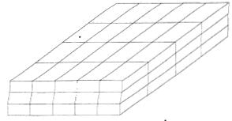
22. A dairy farmer sold milk from 8th December 2011 to 8th March 2012. How many days did the farmer sell the milk?
23. In a school the ratio of boys to girls is 3:2. There are 600 pupils in the school. During an athletic competition 1⁄6 of the girls and 1⁄5 of the boys took part. How many pupils took part in the competition?
24. The table below shows the number of pupils absent from a class of 42 pupils, in a certain week.
25. Construct a parallelogram WXYZ such that lines WX = 5 cm and XY = 7.5 cm. Angle WZY = 135°. Join W to Y and Z to X and let the point of intersection be O. What is the length of line WO?
26. What is 3⁄7(21m + 42n) + 5⁄6(18m — 18n) expressed in its simplest form?
27. A sales agent is paid a basic salary of sh 12 000 and a commission of 3% for goods sold above sh 50 000. In a certain month, his total earnings were sh 15 000. What was the value of the total sales?
28. The pie chart below represents the types of vehicles imported in Kenya in a certain year.
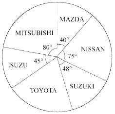
29. A train left town Q on Thursday at 6.45 pm and took 9 hours 30 minutes to reach town R. At what time and day did it reach town R in 24 hour clock system?
30. A cylindrical tank whose height is 3.5 m has a diameter of 2.8 m. If it is full of water, how many more litres are needed to fill the tank? (Take 𝛑 = 22⁄7).
31. In the quadrilateral EFGH drawn below, line EF is parallel to GH. The dotted line JG is the perpendicular height. The area of the quadrilateral is 3600 m2.
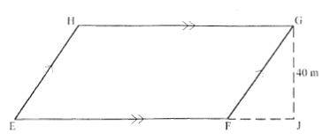
32. Halima bought the following items from a shop.
2kg of sugar @ sh 112.00
4 packets of ½ litre milk @ sh 40.00
1¼ kg cooking fat at sh 120 per kg
2 kg of wheat flour for sh 210
1½ kg of salt at sh 24 per kg
33. A watch loses 5 seconds every hour. The watch was set correct on Wednesday at 6.30 am. What time did it show at 6.30 pm the next Wednesday?
34. A man was 27 years older than his son ten years ago. His wife is 4 years younger than he is. If their total age is 116 years now, how old is the son?
35. The table below shows commission charged on postal orders.
36. What is the value of x in the equation
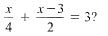
37. The area of a square plot of land is 3.24 hectares. The owner of the plot wanted to fence all round placing posts at intervals of 5 metres. How many posts were required?
38. The figure drawn below is a right-angled triangular prism.
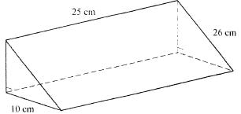
39. In an election, three candidates took part. The winning candidate got 0.429 of the votes cast while the other two got 0.386 and 0.184 respectively. There were 84 spoilt votes. How many votes did the winner get?
40. A lorry was loaded with 150 cartons of cooking fat and 120 bales of flour. Each carton of cooking fat contained twelve 2 kg tins. The mass of an empty carton was 500 grams. Each bale of flour contained twelve 2 kg packets. What was the total load in tonnes?
41. In the figure below lines UV and CD are parallel. Lines WX and YZ are Transversals.
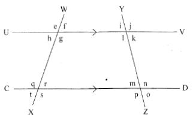
42. A farmer harvested 1 200 crates of tomatoes in the year 2011. This was a 20% decrease from the year 2010. How many crates of tomatoes did the farmer harvest in the year 2010?
43. The figure below represents a half of a cylindrical piece of wood of diameter 28 cm and a length 50 cm. What is the surface area of the wood? (Take 𝛑 = 22⁄7).
44. Chepkoech has k bananas. Omollo has two more bananas than Chepkoech. Nekesa has three bananas less than the total number that both Chepkoech and Omollo have. How many bananas do they have altogether?
45. The table below shows a bus timetable from town J to town P.
46. The figure below represents the net of a solid.
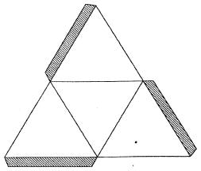
47. The table below shows bus fares to different towns in shillings.
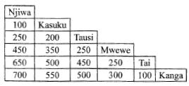
48. The figure KLMN drawn below is a square of sides 40 cm.
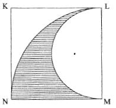
49. The graph shown below represents the journey of a motorist travelling from town Q to town R and back.
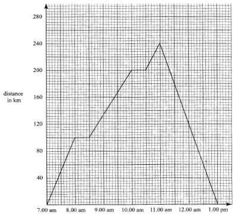
50. The shapes below show a sequence of a pattern.
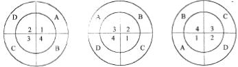
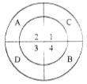
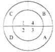
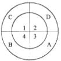
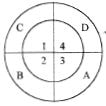